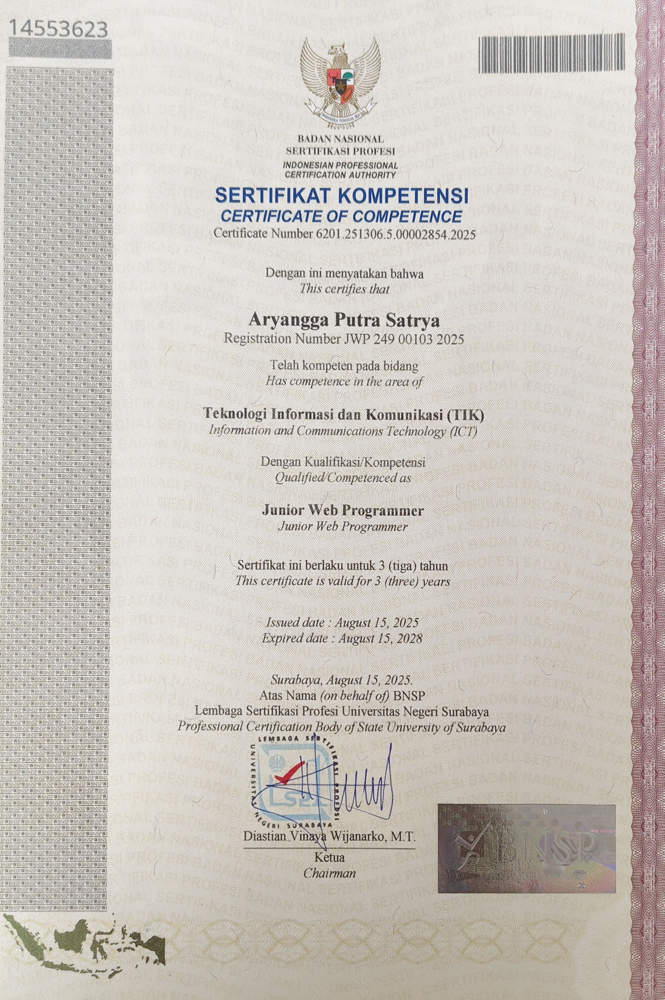
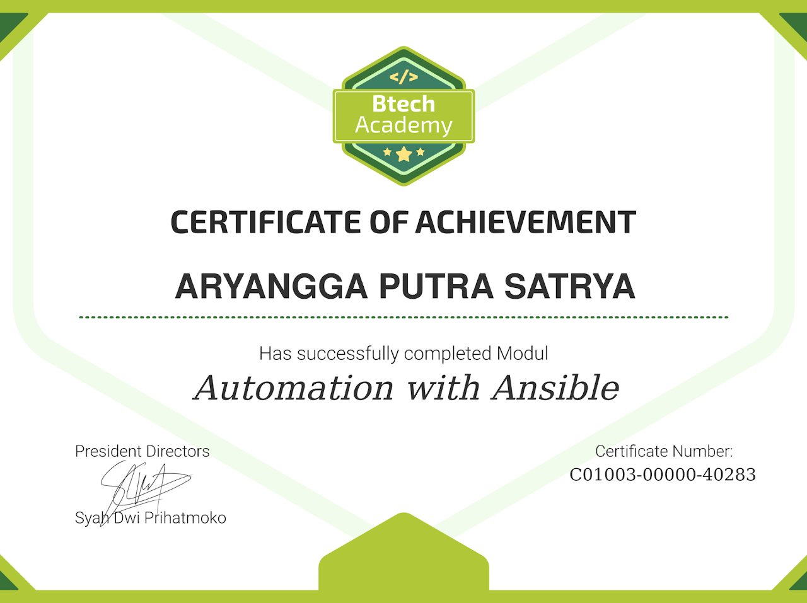
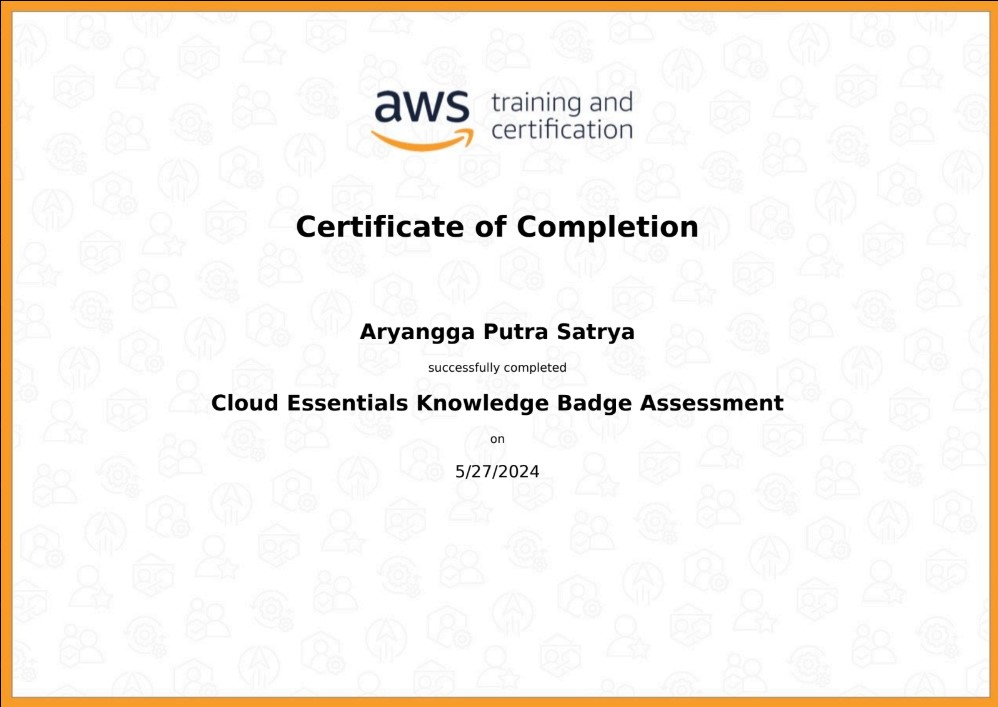

Sertifikat Profesional
Daftar sertifikasi dan pelatihan yang telah saya selesaikan.

Perbesar
Junior Web Programmer
Badan Nasional Sertifikasi Profesi (BNSP)
Agt 2025 - Agt 2028
ID: 6201.251306.5.00002854.2025
Pengembangan Web

Perbesar
Automation with Ansible
Akademi Digital Nusantara (ADINUSA)
Des 2024 - Des 2026
ID: C01003-00000-40283
Ansible
Perbesar
Docker Fundamental
Akademi Digital Nusantara (ADINUSA)
Okt 2024 - Okt 2026
ID: C01002-00000-39417
Docker
Perbesar
Linux System Administration
Akademi Digital Nusantara (ADINUSA)
Okt 2024 - Okt 2026
ID: C01001-00000-39165
Linux System Administration
Perbesar
Cisco Dasar
ID-Networkers (IDN.ID)
Sep 2024 - Sep 2027
ID: IDN-1727251823-184-43633
Cisco Certified
Perbesar
Belajar Linux Dari Nol
ID-Networkers (IDN.ID)
Sep 2024 - Sep 2027
ID: IDN-1726710017-11033-43633

Perbesar
Cloud Essentials Knowledge Badge
Amazon Web Services (AWS)
Diterbitkan Mei 2024